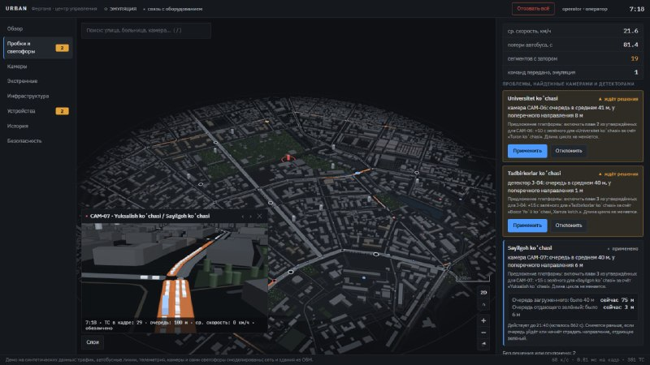

Security by design
Подписанные команды, WireGuard, валидация initData, шифрование полей AES-256. Угрозы моделируются до первой строчки кода.
Backend & CyberSec Engineer. Проектирую отказоустойчивые системы, Telegram-экосистемы и инструменты практической безопасности — с тысячами тестов и защитой на уровне архитектуры.

Каждый проект — с галереей реальных скриншотов, ключевыми решениями и фрагментом архитектуры.
Подписанные команды, WireGuard, валидация initData, шифрование полей AES-256. Угрозы моделируются до первой строчки кода.
Outbox Pattern, ретраи, автооткаты и деградация без потери данных. Система возвращается в безопасное состояние сама.
1 000+ тестов на проект: финансовая логика, гонки, граничные сценарии. Зелёный CI — обязательное условие релиза.
Модульный монолит вместо зоопарка микросервисов, пока это оправдано. Меньше движущихся частей — меньше поверхность атаки.
60% практической кибербезопасности, 40% Highload и System Design. Свежие посты:
169.254.169.254, IMDSv2, обход через Hop Limit в Kubernetes и защита.
Читать → #инструментыКлиент-серверная архитектура, язык QSL и запуск в Docker за 10 секунд.
Читать → #архитектураСвоё железо, Kamal вместо Kubernetes и NVMe без лимитов IOPS.
Читать →Реальные 0-day, open-source утилиты с GitHub и кейсы System Design — каждую неделю.